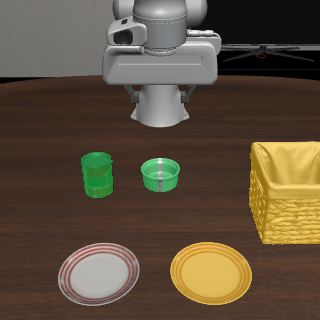

CTR_028
Put the ramekin in the basket, then put the tomato sauce on the right plate.
Manually valid 2/5 (40%) · Native evaluator 2/5

Parent experiment: VCN35_005, native evaluator 2/5. Put the ramekin in the basket, then put the tomato sauce on the right plate.
Exploratory pose-repair variant of the existing VCN35_005 family. Parent historical native result was 2/5; this fresh run uses the established RAIN checkpoints and seeds 7–11, and is not a matched-seed comparison or evidence of improved success rate. Ramekin grasp/basket placement and tomato/right-plate placement include the object-binding transfers documented below. The selected 60 tasks are unchanged.
Failure evidence and repair
{
"object_id": "tomato_sauce_1",
"offset_world_m": [
-0.02,
0.02,
0
],
"notes": "Same fixed XY translation in all five frozen states, toward the gripper-closing positions seen in historical failed tomato pickups; target plate and other objects unchanged."
}Parent and repaired starting states
Each repair derives from the matching parent state below. Policy seeds differ from the historical run, so this is not a matched-seed causal comparison.
| State | Historical parent | Fresh repair |
|---|---|---|
| 000 | Failed | Verified success |
| 001 | Native success | Failed |
| 002 | Native success | Failed |
| 003 | Failed | Failed |
| 004 | Failed | Verified success |
Original LIBERO-40 skill lineage
- libero_spatial: pick_up_the_black_bowl_from_table_center_and_place_it_on_the_plate
Table-center bowl grasp is transferred to the ramekin via ANLGX_088 and WTRAYR_005. The ramekin is only a distractor/support in original40, with no directly trained ramekin grasp; this is object-identity adaptation. - libero_10: LIVING_ROOM_SCENE2_put_both_the_alphabet_soup_and_the_tomato_sauce_in_the_basket
Tabletop basket placement transfers from the tomato-sauce primitive through LBCM_003; the receiving object is the ramekin, so the ramekin-to-basket binding is transferred. - libero_10: LIVING_ROOM_SCENE5_put_the_white_mug_on_the_left_plate_and_put_the_yellow_and_white_mug_on_the_right_plate
Exact right-plate binding from yellow-and-white mug placement transfers to tomato_sauce_1 through ADAPT_098; the original40 source does not directly demonstrate tomato-on-right-plate. - libero_10: LIVING_ROOM_SCENE6_put_the_white_mug_on_the_plate_and_put_the_chocolate_pudding_to_the_right_of_the_plate
Front plate pose/reachable target context transfers to the two front plate slots through ADAPT_098. - libero_object: pick_up_the_tomato_sauce_and_place_it_in_the_basket
Tomato sauce is directly grasped in original40; its learned object interaction is rebound to the right-plate destination, then composed after ramekin basket placement.
Certified episodes: 000, 004.